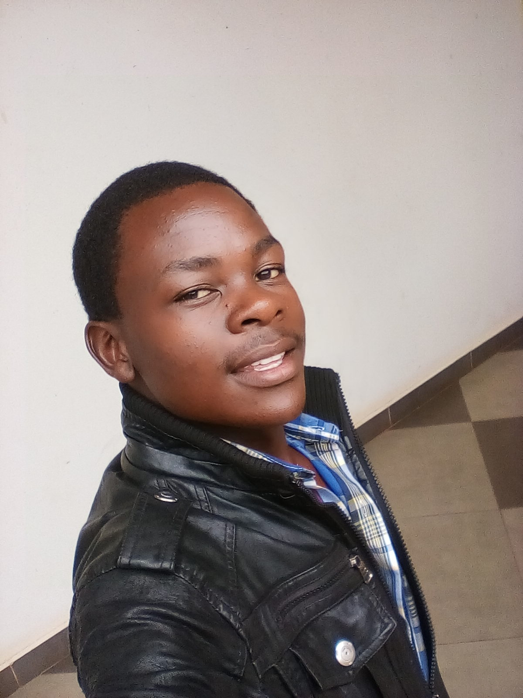
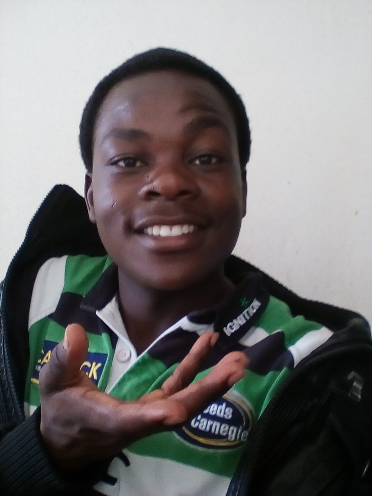
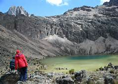
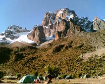
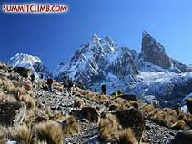

PETER ENOCK SIMIYU MUKHEBI
 
My best thihgs ever
Introduction
hello everyone! my name is Peter Enock, I am student at the great Moringa School;- Kenya and also a student at
the University of Nairobi;- Kenya Science
Campus before joining the above two institutions, I went to Mwiyenga Primary School for nine years. after which I joined Bishop
Atundo boys high School. Four years later, I completed my secondary School education. After a period of about three months, I joined
African Insititute of Research and Development Study for a 1month course. Two years later, I was addimmited to the University of
Nairobi. Now three years after, am at the great Moringa School.
before joining the above two institutions, I went to Mwiyenga Primary School for nine years. after which I joined Bishop
Atundo boys high School. Four years later, I completed my secondary School education. After a period of about three months, I joined
African Insititute of Research and Development Study for a 1month course. Two years later, I was addimmited to the University of
Nairobi. Now three years after, am at the great Moringa School.
I am a software developer from MORINGA SCHOOL - Kenya. I does coding as a Job,
hobby and for fun . Am passionate
about buildiing codes and love them (codes). Programming is my no.1 profession because I enjoy going through smart web-pages, playing car
racing video games and building them.
School
my best schools happens to be Mwiyenga Primary School which was my first school and Moringa School. Mwiyenga appears here
because it made me feel good as a kid; enjoying the 'run-back-homes' and putting on the school uniforme are what made me feel like my real
self
Entertainment
I love playing video games, watching movies and listening to music. My best video games are car rasing games with no specific game. playing
these games makes me feel better when stressed or when just tired of thinking. They keeps my dream to build my on car racing video game
alive.
When it comes to movies, I love most watching cartoons movies which I also desire so badly to make them; no wander coding is the best
thing to learn and do. Nigerian movies, the commonly known as OGAH MOVIES are also good to watch for me since they reminds me of my past
life and they gives me an opportunity to learn more and build on my talend(acting) .I mostly listen to music when I want to sleep for it makes it
easy for me catch a sleep.
Activities
Gaming could have been my best activies but I does it as part my entertainment. Though money is always is a factor and a problem for me, the best of all
other activities remains touring the different parts of the Globe. Among others I like mountain climping ,,_, basketball playing, swimming
and many more. I firt joined mountain climpers in year 2014 during my tour to mt. Elgon. It was a dangerous journey to embark on considering the fact that
I had not done mountain climping before then. But as the saying goes; "NO VENTURE NO GAIN", the end of what I was fearing to do made me proud of
myself. Mountain climping is such an awesome thing to find some time and do. Later on in 2016, a campus friend called me asking if I could join them
for a mountaing climping tour. Perhaps, he wasn't sure if I would say no or yes but, trust me, I won't have dared to say no to such a great opportunity.